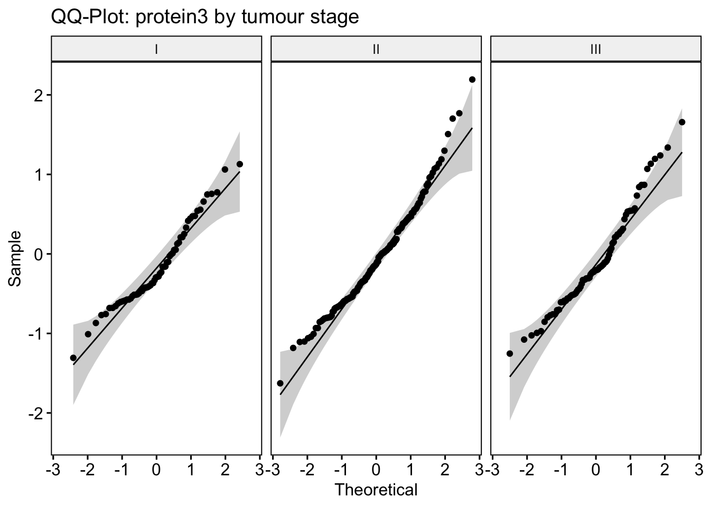
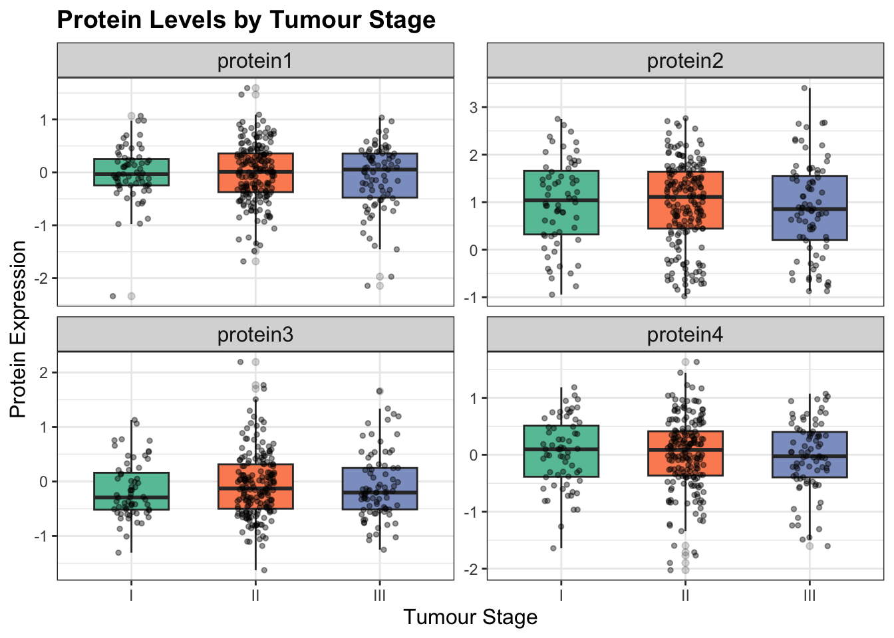
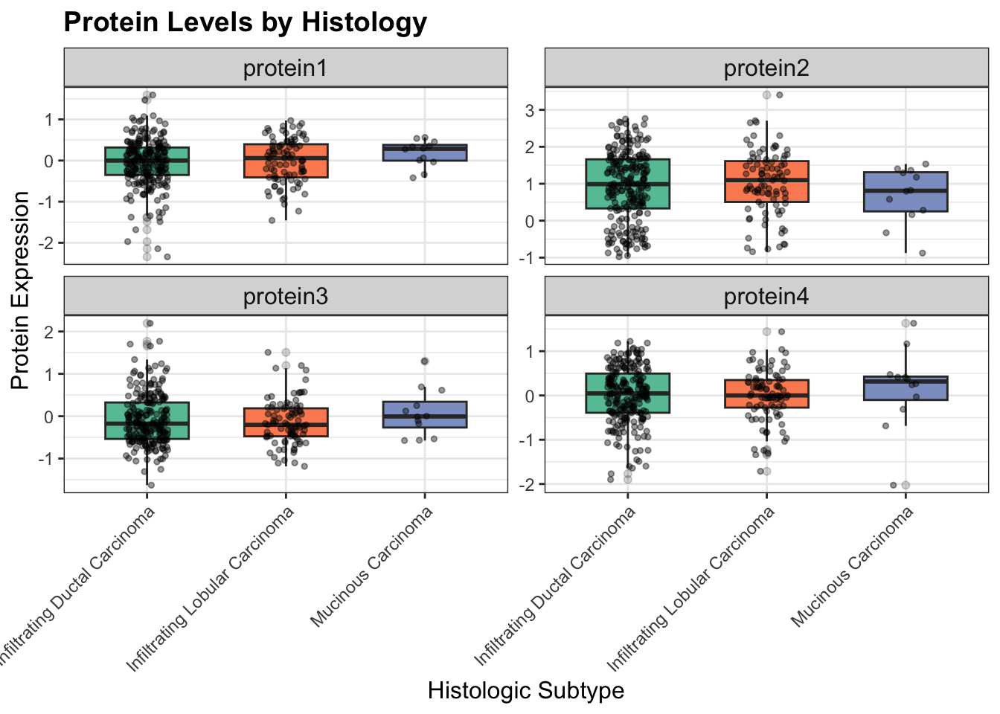

ANOVA
5) ANOVA: Protein biomarkers across clinical groups
# identify protein biomarker columns (protein1–protein4)
protein_vars <- names(brca)[grepl("^protein", names(brca))]Do protein levels differ by tumour stage?
# group means by tumour_stage
means_tumour_stage <- brca |>
select(tumour_stage, all_of(protein_vars)) |>
pivot_longer(
cols = all_of(protein_vars),
names_to = "biomarker",
values_to = "value"
) |>
group_by(tumour_stage, biomarker) |>
summarise(
mean_value = mean(value, na.rm = TRUE),
n = sum(!is.na(value)),
.groups = "drop"
)
# one-way ANOVA for each protein ~ tumour_stage
anova_tumour_stage <- protein_vars |>
lapply(function(p) {
fit <- aov(reformulate("tumour_stage", response = p), data = brca)
tidy(fit) |>
slice(1) |>
transmute(
biomarker = p,
df = df,
f_statistic = statistic,
p_value = p.value
)
}) |>
bind_rows() |>
mutate(p_adj = p.adjust(p_value, method = "BH"))
means_tumour_stage## # A tibble: 12 × 4
## tumour_stage biomarker mean_value n
## <ord> <chr> <dbl> <int>
## 1 I protein1 -0.0144 64
## 2 I protein2 1.00 64
## 3 I protein3 -0.165 64
## 4 I protein4 0.0378 64
## 5 II protein1 -0.00773 189
## 6 II protein2 0.965 189
## 7 II protein3 -0.0654 189
## 8 II protein4 0.0180 189
## 9 III protein1 -0.0942 81
## 10 III protein2 0.862 81
## 11 III protein3 -0.0888 81
## 12 III protein4 -0.0315 81anova_tumour_stage## # A tibble: 4 × 5
## biomarker df f_statistic p_value p_adj
## <chr> <dbl> <dbl> <dbl> <dbl>
## 1 protein1 2 0.697 0.499 0.777
## 2 protein2 2 0.498 0.608 0.777
## 3 protein3 2 0.693 0.501 0.777
## 4 protein4 2 0.253 0.777 0.777For all four proteins (protein1–protein4), the global ANOVA tests were not statistically significant (all BH-adjusted p-values > 0.77). Thus, there is no statistical evidence of differences in biomarker expression by tumour stage in this cohort, and post-hoc pairwise comparisons were not pursued. Although small numerical differences in mean protein levels were observed, these differences were not statistically significant. This suggests that, in this dataset, tumour stage alone does not explain variation in protein biomarker expression. This could be due to biological similarity across stages, high within-group variability, or limited power for detecting subtle effects.
Do protein levels differ by histology?
# group means by histology
means_histology <- brca |>
select(histology, all_of(protein_vars)) |>
pivot_longer(
cols = all_of(protein_vars),
names_to = "biomarker",
values_to = "value"
) |>
group_by(histology, biomarker) |>
summarise(
mean_value = mean(value, na.rm = TRUE),
n = sum(!is.na(value)),
.groups = "drop"
)
# one-way ANOVA for each protein ~ histology
anova_histology <- protein_vars |>
lapply(function(p) {
fit <- aov(reformulate("histology", response = p), data = brca)
tidy(fit) |>
slice(1) |>
transmute(
biomarker = p,
df = df,
f_statistic = statistic,
p_value = p.value
)
}) |>
bind_rows() |>
mutate(p_adj = p.adjust(p_value, method = "BH"))
means_histology## # A tibble: 12 × 4
## histology biomarker mean_value n
## <fct> <chr> <dbl> <int>
## 1 Infiltrating Ductal Carcinoma protein1 -0.0500 233
## 2 Infiltrating Ductal Carcinoma protein2 0.930 233
## 3 Infiltrating Ductal Carcinoma protein3 -0.0804 233
## 4 Infiltrating Ductal Carcinoma protein4 0.00905 233
## 5 Infiltrating Lobular Carcinoma protein1 -0.00522 89
## 6 Infiltrating Lobular Carcinoma protein2 1.03 89
## 7 Infiltrating Lobular Carcinoma protein3 -0.139 89
## 8 Infiltrating Lobular Carcinoma protein4 -0.00825 89
## 9 Mucinous Carcinoma protein1 0.174 12
## 10 Mucinous Carcinoma protein2 0.684 12
## 11 Mucinous Carcinoma protein3 0.0840 12
## 12 Mucinous Carcinoma protein4 0.159 12anova_histology## # A tibble: 4 × 5
## biomarker df f_statistic p_value p_adj
## <chr> <dbl> <dbl> <dbl> <dbl>
## 1 protein1 2 1.02 0.362 0.557
## 2 protein2 2 0.887 0.413 0.557
## 3 protein3 2 0.876 0.417 0.557
## 4 protein4 2 0.372 0.690 0.690Across histologic subtypes, protein levels were visually and statistically similar, with substantial overlap between groups. All BH-adjusted ANOVA p-values were > 0.36, indicating no detectable expression differences by histology. Consequently, post-hoc pairwise comparisons were not performed.
Because no p-values are statistically significant, we check ANOVA assumptions!
Normality (per group per protein)
for (p in protein_vars) {
print(
ggqqplot(brca, x = p, facet.by = "tumour_stage",
title = paste("QQ-Plot:", p, "by tumour stage"))
)
}



The QQ-plots for each protein by tumour stage were reasonably linear, suggesting that the normality assumption is acceptable for these ANOVA models.
Homogeneity of variances (Levene’s Test)
for (p in protein_vars) {
print(p)
print(leveneTest(brca[[p]] ~ brca$tumour_stage))
}## [1] "protein1"
## Levene's Test for Homogeneity of Variance (center = median)
## Df F value Pr(>F)
## group 2 1.7094 0.1826
## 331
## [1] "protein2"
## Levene's Test for Homogeneity of Variance (center = median)
## Df F value Pr(>F)
## group 2 0.5266 0.5911
## 331
## [1] "protein3"
## Levene's Test for Homogeneity of Variance (center = median)
## Df F value Pr(>F)
## group 2 0.6378 0.5291
## 331
## [1] "protein4"
## Levene's Test for Homogeneity of Variance (center = median)
## Df F value Pr(>F)
## group 2 0.0149 0.9852
## 331Levene’s tests indicated no significant variance differences across tumour stage groups for any protein (all p > 0.18). Thus, the assumption of equal variances is not violated for any protein, and standard one-way ANOVA is appropriate and valid. Overall, protein levels do not significantly differ by tumour stage in this dataset — not because ANOVA assumptions failed, but because any true effects are likely small relative to within-group variability.
Boxplot — Proteins by Tumour Stage
# Identify proteins
protein_vars <- names(brca)[grepl("^protein", names(brca))]
# Pivot long
brca_long_stage <- brca |>
select(tumour_stage, all_of(protein_vars)) |>
filter(!is.na(tumour_stage)) |>
pivot_longer(
cols = all_of(protein_vars),
names_to = "protein",
values_to = "value"
)
# Boxplots
ggplot(brca_long_stage, aes(x = tumour_stage, y = value, fill = tumour_stage)) +
geom_boxplot(outlier.alpha = 0.2, width = 0.6) +
geom_jitter(alpha = 0.4, width = 0.15, size = 1) +
facet_wrap(~ protein, scales = "free_y") +
scale_fill_brewer(palette = "Set2") +
labs(
title = "Protein Levels by Tumour Stage",
x = "Tumour Stage",
y = "Protein Expression"
) +
theme_bw() +
theme(
legend.position = "none",
strip.text = element_text(size = 12),
axis.title = element_text(size = 12),
plot.title = element_text(size = 14, face = "bold")
)
Protein1 expression showed very similar distributions across tumour stages I, II, and III. Median levels were close to zero in all three groups, and the interquartile ranges largely overlapped. Although a few outliers were present in each stage, the overall spread of values was comparable, suggesting no meaningful differences in Protein1 expression by tumor stage in this dataset. This interpretation perfectly matches our ANOVA result where p = 0.50 (not significant) and Levene’s test where p = 0.18 (equal variances). Similar patterns were observed for protein2–protein4, with substantial overlap in distributions across tumor stages. Protein1 expression showed very similar distributions across tumour stages I, II, and III. Median levels were close to zero in all three groups, and the interquartile ranges largely overlapped. Although a few outliers were present in each stage, the overall spread of values was comparable, suggesting no meaningful differences in Protein1 expression by tumour stage in this dataset. This interpretation perfectly matches our ANOVA result where p = 0.50 (not significant) and Levene’s test where p = 0.18 (equal variances). Similar patterns were observed for protein2–protein4, with substantial overlap in distributions across tumour stages.
Boxplot - Protein by Histology
# Identify protein variables
protein_vars <- names(brca)[grepl("^protein", names(brca))]
# Pivot to long format
brca_long_hist <- brca |>
select(histology, all_of(protein_vars)) |>
filter(!is.na(histology)) |>
pivot_longer(
cols = all_of(protein_vars),
names_to = "protein",
values_to = "value"
)
# Plot
ggplot(brca_long_hist, aes(x = histology, y = value, fill = histology)) +
geom_boxplot(outlier.alpha = 0.2, width = 0.6) +
geom_jitter(alpha = 0.4, width = 0.15, size = 1) +
facet_wrap(~ protein, scales = "free_y") +
scale_fill_brewer(palette = "Set2") +
labs(
title = "Protein Levels by Histology",
x = "Histologic Subtype",
y = "Protein Expression"
) +
theme_bw() +
theme(
legend.position = "none",
strip.text = element_text(size = 12),
axis.text.x = element_text(angle = 45, hjust = 1),
axis.title = element_text(size = 12),
plot.title = element_text(size = 14, face = "bold")
)
Across histologic subtypes, protein levels were visually similar with substantial overlap between groups, indicating no detectable expression differences by histology. This is consistent with our non-significant ANOVA results (all adjusted p-values > 0.36).
Final Conclusion: Overall, there was no evidence that protein biomarker expression differed meaningfully by tumour stage or histologic subtype in this dataset. Although there were small differences in average levels, the large amount of variability within groups and the overlap in distributions suggest that these biomarkers do not strongly reflect clinical disease stage or histology on their own. These findings indicate that additional clinical or molecular factors are likely needed to explain differences in disease characteristics, and that the proteins available in this dataset may have limited value as standalone indicators of disease severity.